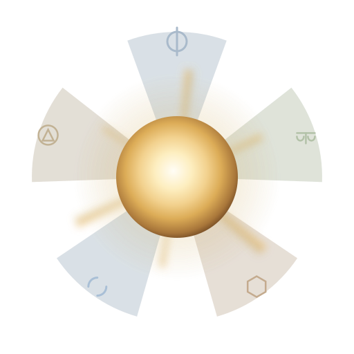

Five labs review your plan before a line of code exists. Nothing builds until the Council signs off — or tells you exactly why it won't.
Every plan-N seat drafts with one model (the Advocate — Claude, Anthropic) and
submits the draft to five critic seats from five other labs. Each one reviews it blind,
independently, on the record. The draft only ships once the Council signs off — or the run
records exactly who objected and why.
This isn't a metaphor drawn over a chat completion — it's a real, structured verdict from
relay's own report.json, the same data the in-app Debate panel renders. A
sample shape from a real run:
Conductor and Nimbalyst run several copies of the same agent and let a human pick the best result afterward. That's redundancy, not review.
N copies of one agent, same lab, racing to the same answer. You review the output after it's already built.
One proposer, five other labs' models cross-examining the plan before anything is built. Every objection is on the record.
Support Sophi-A
€20
One-time purchase, no subscription
Support the developer
Every purchase funds continued development of Sower Industries.
Skip the setup
Source stays free either way - this buys a working build, not the code.